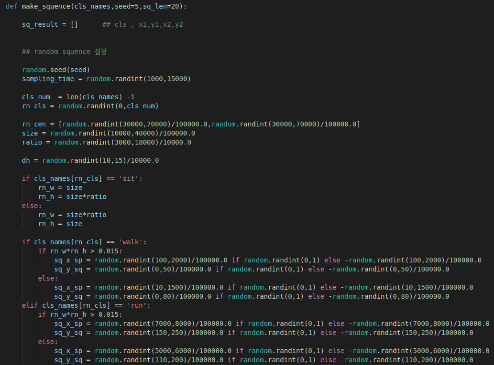
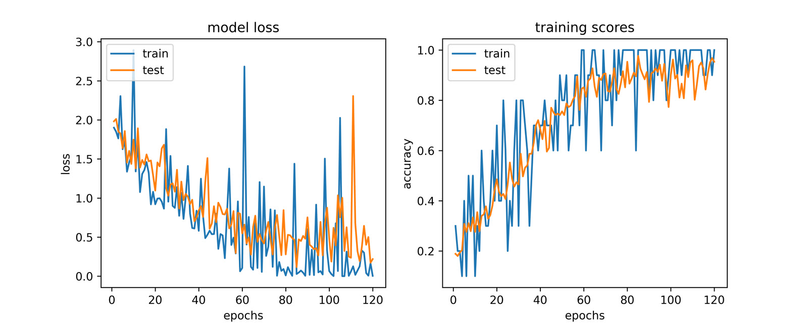

Contract · ROBOI · 2021
Churo: recognizing dog behavior from home camera video
Behavior recognition for a dog-care robot. The pipeline found the dog in each frame, followed it over time, and sorted short clips into five behaviors.
- Role
- Independent contractor
- Client
- ROBOI Co.
- Classes
- fast, slow, jump, stand, sleep
- Stack
- Python, PyTorch, YOLOv5, SORT, OpenCV
The problem
The robot watched a dog through an indoor camera and needed to tell what it was doing: sleeping, standing, walking, running or jumping. A single frame cannot separate a slow walk from a run, so the model had to look at motion over time.
No labeled clips existed for this camera setup, so building the training set was part of the work.
The pipeline
- 1 Detect and track YOLOv5 found dogs in each frame, keeping only the dog class. SORT linked the boxes across frames so each clip follows one dog.
- 2 Label clips A small tool showed each 20-frame clip as a grid with its boxes. One key press saved the clip as a 640×480, 30 fps video under one of the five classes.
- 3 Classify A ResNet-CRNN video classifier read the clip: ResNet features for each frame, then an LSTM over the 20 frames.
I also wrote a generator for synthetic bounding-box sequences, one per behavior class, so an LSTM could be trained on box motion alone.

Results
The classifier was trained for 120 epochs and evaluated on a held-out set of 344 clips.

Frames from the client's cameras are not shown here.
My part
A contract for ROBOI Co. that a friend and I took on together. We built the pipeline that detects the dog and classifies its behavior with YOLOv5 and LSTM-based motion analysis.